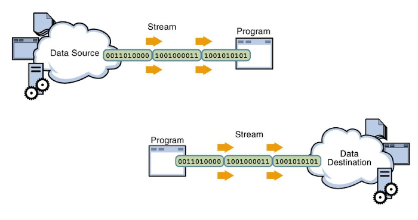

Tema 8. Entrada i eixida
Resultat d'aprenentatge associat
RA5. Realitza operacions d'entrada i sortida d'informació utilitzant procediments específics del llenguatge i llibreries de classes..
Criteris d'avaluació
- RA5.1. S'ha utilitzat la consola per realitzar operacions d'entrada i sortida d'informació.
- RA5.2. S'han aplicat formats en la visualització de la informació.
- RA5.3. S'han reconegut les possibilitats d'entrada / sortida del llenguatge i les llibreries associades.
- RA5.4. S'han utilitzat fitxers per emmagatzemar i recuperar informació.
- RA5.5. S'han creat programes que utilitzin diversos mètodes d'accés al contingut dels fitxers.
Introducció
Note
“Un programa es comunica amb l’usuari i amb el món exterior”
Una part important de tot llenguatge de programació és com s’establirà el contacte amb l’exterior, bé siga mitjançant la consola o a través del sistema de fitxers, per finalment poder actuar amb l’usuari d’una aplicació en execució. Ambdós, consola i sistema de fitxers, poden funcionar tant d’entrada als nostres programes com d’eixida.
Java defineix una abstracció, els streams o fluxos per tractar la comunicació d’informació amb l’exterior. Per entendre-ho millor, un stream o flux és com un canal de comunicació entre un origen i un destí. Per exemple suposem el cas d’un programa que quan arranque haja de llegir una llista de clients d’un fitxer de text per crear una agenda. En aquest cas l’origen seria el fitxer de text i el destí el programa o aplicació que s’encarrega d’emplenar l’agenda amb el llistat de clients, doncs bé, l’stream en aquest escenari seria el canal de comunicació que s’establiria entre el fitxer de text i el programa per tal que aquest puga llegir la informació.

A la imatge anterior es poden observar dos tipus de fluxos de dades: El primer és un flux d'entrada de dades, s'enten d'entrada perquè va del sistema de fitxers al programa, mentre que el segon representa un flux de dades d'eixida, ja que aquest va del programa al sistema de fitxers.
En aquest tema explicarem com Java tracta mitjançant objectes l’establiment d'aquests canals de comunicació i quines són les operacions que hi podem fer i com s’han d’utilitzar aquestes abstraccions de Java. D’altra banda Java també ofereix el mecanisme d’excepcions per controlar els errors sobrevinguts. Una excepció és un problema que es produeix en temps d’execució. Java permet controlar aquests problemes i programar amb els try...catch la solució als errors en temps d’execució.
Entrada i eixida per consola en Processing IDE
La consola com a eina d’eixida i entrada bàsica d’informació
Criteris d'avaluació associats
- RA5.1. S'ha utilitzat la consola per realitzar operacions d'entrada i sortida d'informació.
- RA5.2. S'han aplicat formats en la visualització de la informació.
- RA5.3. S'han reconegut les possibilitats d'entrada / sortida del llenguatge i les llibreries associades.
En Processing IDE, la consola no és el canal principal d’interacció amb l’usuari, ja que aquest entorn està pensat sobretot per a aplicacions gràfiques i interactives. Tot i això, la consola continua sent molt útil per a:
- mostrar informació i resultats
- indicar l’estat del programa
- detectar errors i depurar codi
- fer proves ràpides amb entrada molt bàsica
En aquest bloc treballarem la eixida d’informació per consola i veurem un mecanisme senzill per capturar entrada de dades en Processing, sense utilitzar Scanner.
Eixida de dades per consola
La forma més habitual de mostrar informació en Processing és utilitzar la consola mitjançant l’objecte System.out o les funcions pròpies print() i println().
Exemples:
Aquestes instruccions permeten mostrar:
- valors de variables
- resultats de càlculs
- missatges informatius
La consola és especialment útil per comprovar què està passant dins del programa mentre s’executa.
Activitat 801. Missatges per consola
Escriu un programa que mostre per consola:
- Un missatge de benvinguda
- El valor de tres variables diferents (enter, real i text)
- Un missatge final indicant que el programa ha acabat
| Ítem | 0 - Inexistent | 1 - Incorrecte | 2 - Parcial | 3 - Correcte | 4 - Perfecte | Pes |
|---|---|---|---|---|---|---|
| Missatge de benvinguda | No hi ha cap missatge de benvinguda | El missatge és incorrecte o no té sentit | El missatge és poc clar o incomplet | Missatge correcte i entenedor | Missatge clar, ben redactat i adequat al context | 15% |
| Mostra de variables | No es mostren variables | Es mostren amb errors greus (tipus o valors incorrectes) | Es mostren algunes variables o amb errors menors | Es mostren correctament les tres variables | Es mostren correctament i amb un format clar i ben presentat | 25% |
| Missatge final | No hi ha missatge final | El missatge és incorrecte o no indica finalització | El missatge és poc clar | Missatge correcte indicant el final | Missatge clar, ben redactat i coherent amb el programa | 15% |
Ús de println |
No s’utilitza | Ús incorrecte que provoca errors | Ús bàsic amb alguna errada menor | Ús correcte de println |
Ús correcte i consistent, amb bon estil | 15% |
| Resultat final | El programa no funciona | Funciona malament o amb molts errors | Funciona parcialment | Funciona correctament | Funciona perfectament i amb una eixida clara i ordenada | 20% |
| Qualitat i claredat del codi | Codi desordenat o inintel·ligible | Codi amb molts problemes d’organització | Codi acceptable però millorable | Codi clar i ordenat | Codi molt net, ben estructurat i fàcil de llegir | 10% |
Mostrar informació amb format
Quan volem mostrar informació de manera més clara o ordenada, podem utilitzar formats. Processing permet usar printf() igual que Java.
Exemple:
int edat = 20;
float nota = 8.345f;
System.out.printf("Edat: %d anys%n", edat);
System.out.printf("Nota final: %.2f%n", nota);
Formats habituals:
%d→ nombres enters%f→ nombres reals%.2f→ nombre real amb dos decimals%s→ text%n→ salt de línia
L’ús de formats millora molt la llegibilitat de la informació mostrada.
Activitat 802. Eixida amb format
Declara variables per al nom d’un alumne, la seua edat i una nota mitjana. Mostra tota la informació per consola utilitzant printf() i formats adequats.
| Ítem | 0 - Inexistent | 1 - Incorrecte | 2 - Parcial | 3 - Correcte | 4 - Perfecte | Pes |
|---|---|---|---|---|---|---|
| Declaració de variables | No es declaren variables | Variables incorrectes o amb errors de tipus | Es declaren però amb algun error menor | Variables correctes (nom, edat, nota) | Variables ben definides amb noms clars i coherents | 15% |
Ús de printf |
No s’utilitza printf |
Ús incorrecte que provoca errors | Ús bàsic amb errors en el format | Ús correcte de printf |
Ús correcte i consistent amb bon estil | 25% |
| Aplicació de formats | No s’utilitzen formats | Formats incorrectes (%d, %f, etc.) | Formats parcialment correctes | Formats correctes per a cada tipus | Formats correctes i ben ajustats (ex: decimals) | 25% |
| Presentació de la informació | No es mostra la informació | Informació confusa o mal estructurada | Informació comprensible però millorable | Informació clara i ordenada | Informació molt clara, ben estructurada i llegible | 15% |
| Resultat final | El programa no funciona | Funciona amb errors greus | Funciona parcialment | Funciona correctament | Funciona perfectament amb eixida ben formatada | 10% |
| Qualitat i claredat del codi | Codi desordenat o difícil d’entendre | Codi amb molts problemes | Codi acceptable | Codi clar i ordenat | Codi molt net, ben estructurat i llegible | 10% |
Entrada de dades bàsica amb el teclat en Processing
Particularitats de Processing IDE
Processing IDE és un entorn de desenvolupament senzill que no té la potència d'altres entorns com Eclipse IDE o Visual Studio Code, per tant moltes de les classes d'entrada i eixida que veurem en aquest tema no es podran provar en Processing. Sempre podem obrir un projecte nou en Eclipse o Visual Studio i provar els exemples que no funcionen en Processing IDE.
Processing no està pensat per a una entrada de dades per consola com Java clàssic, però ofereix un mecanisme molt senzill per capturar l’entrada de l’usuari mitjançant el teclat: la variable key i la funció keyPressed().
Aquest mecanisme permet llegir caràcter a caràcter, suficient per a entrades simples.
Exemple: lectura d’un caràcter:
Cada vegada que l’usuari prem una tecla, Processing executa automàticament aquesta funció.
Activitat 803. Caputra de tecles
🧩 Crea un programa que mostre per consola totes les tecles que va prement l’usuari. Prova a distingir lletres, números i la barra espaiadora.
| Ítem | 4 - Perfecte | 3 - Correcte | 2 - Parcial | 1 - Incorrecte | 0 - Inexistent | Pes |
|---|---|---|---|---|---|---|
Detecció de tecles (keyPressed) |
Implementa correctament keyPressed i captura totes les tecles sense errors |
Detecta correctament les tecles | Detecta tecles però amb algun error puntual | Implementació incorrecta de l’esdeveniment | No utilitza keyPressed |
25% |
| Classificació de tecles | Distingeix correctament números, lletres i espai en tots els casos | Distingeix correctament la majoria | Distingeix parcialment (només alguns casos) | Classificació incorrecta | No classifica les tecles | 25% |
| Ús de condicions | Ús correcte i eficient de condicions (if/else ben estructurats) | Ús correcte de condicions | Ús amb alguns errors o redundàncies | Condicions incorrectes o mal plantejades | No utilitza condicions | 20% |
| Eixida per consola | Mostra missatges clars i diferenciats per cada tipus de tecla | Mostra informació correcta | Mostra informació parcial o poc clara | Missatges incorrectes o confusos | No mostra informació | 15% |
| Resultat final | Funciona perfectament en tots els casos | Funciona correctament | Funciona parcialment | Funciona amb errors greus | No funciona | 10% |
| Qualitat i claredat del codi | Codi molt net, ben estructurat i fàcil de llegir | Codi clar i ordenat | Codi acceptable però millorable | Codi desordenat o poc clar | Codi inexistent o inintel·ligible | 5% |
Limitacions de l’entrada per consola en Processing
Cal tindre en compte que aquest tipus d’entrada:
- no és bloquejant (el programa continua executant-se)
- no és adequada per a dades complexes
- es fa de manera asíncrona
Per aquest motiu, en els següents blocs del tema:
- la entrada principal de dades es farà mitjançant fitxers i interfícies gràfiques
- la consola quedarà com a eina de suport i depuració
Fitxers de text
Fitxers de text en Java
Llegir i escriure fitxers de text de manera senzilla, neta i moderna sense arrossegar el codi antic de java.io.
Criteris d'avaluació associats
- RA5.3. S'han reconegut les possibilitats d'entrada / sortida del llenguatge i les llibreries associades.
- RA5.4. S'han utilitzat fitxers per emmagatzemar i recuperar informació.
Fins ara, totes les dades dels nostres programes vivien a la memòria RAM: quan tancàvem l'execució, desapareixien. Per fer que la informació siga persistent (com guardar una partida, una configuració o un registre d'usuaris), necessitem emmagatzemar-la en fitxers.
En aquest bloc deixarem de banda les classes antigues i pesades de Java (BufferedReader, FileWriter, etc.) i utilitzarem la llibreria moderna Java NIO (java.nio.file), que permet llegir i escriure fitxers de text en una sola línia de codi.
Rutes de fitxers: Path i Paths
Abans de llegir o escriure un fitxer, hem d'indicar on es troba. Per a això utilitzem la interfície Path i la classe Paths.
En Processing IDE, la funció sketchPath("nom_fitxer.txt") ens retorna automàticament la ruta completa dins de la carpeta del nostre projecte, cosa que ens evita problemes de rutes relatives.
Exemple:
Lectura i escriptura simplificada amb Files
La classe Files ens proporciona mètodes estàtics molt directes per treballar amb fitxers de text:
-
Files.writeString(ruta, text): Escriu una cadena de text dins del fitxer (el crea si no existeix o el sobreescriu si ja existeix).
-
Files.readString(ruta): Llig tot el contingut del fitxer de text de colp i el retorna com un String.
-
Files.readAllLines(ruta): Llig tot el fitxer i retorna una List
on cada element és una línia.
Gestió obligatòria d'errors (try-catch)
Treballar amb el disc dur sempre pot fallar (el fitxer no existeix, no tenim permisos, el disc està ple...). Per això, Java obliga a envoltar les operacions amb Files dins d'un bloc try-catch capturant IOException.
Exemple complet d'escriptura i lectura:
Activitat 804. El meu primer fitxer persistent
Crea un programa en Processing que demane o definisca el nom d'un jugador i la seua puntuació màxima.
1. Guarda aquesta informació en un fitxer anomenat record.txt dins de la carpeta del projecte utilitzant Files.writeString().
2. A continuació, llig el contingut del fitxer amb Files.readString() i mostra'l per consola.
3. Gestiona correctament qualsevol possible IOException amb un bloc try-catch.
| Ítem | 4 - Perfecte | 3 - Correcte | 2 - Parcial | 1 - Incorrecte | 0 - Inexistent | Pes |
|---|---|---|---|---|---|---|
Gestió de rutes (Path) |
Utilitza Paths.get() i sketchPath() de forma impecable |
Utilitza Path correctament |
Ús de rutes amb algun problema menor | Rutes mal definides o codificades a mà incorrectament | No utilitza Path |
20% |
Escriptura amb Files |
Escriu correctament les dades amb Files.writeString() |
Escriu correctament al fitxer | Escriu parcialment o amb errors de format | Escriptura errònia | No escriu al fitxer | 25% |
Lectura amb Files |
Llig i recupera el text complet amb Files.readString() |
Llig el contingut correctament | Lectura incompleta o amb errors menors | Lectura errònia | No llig el fitxer | 25% |
| Control d'excepcions | Controla IOException amb try-catch i mostra missatge clar |
Controla IOException correctament |
Control bàsic sense missatge informatiu | Control d'errors deficient | No utilitza try-catch |
20% |
| Qualitat del codi | Codi net, ben estructurat i comentat | Codi clar i ordenat | Codi acceptable però millorable | Codi desordenat | Codi inexistent o inintel·ligible | 10% |
Encara no disponible
Afegir contingut i treballar per línies
Per defecte, Files.writeString() esborra el contingut anterior del fitxer. Si volem afegir text al final sense perdre el que ja hi havia (ideal per a un historial o log), només hem d'afegir l'opció StandardOpenOption.APPEND.
A més, quan tenim diverses línies (per exemple, una llista de tasques o de jugadors), Files.readAllLines() ens facilita molt la faena convertint el fitxer directament en una List
Exemple:
Activitat 805. Registre d'esdeveniments (Log)
Crea un programa en Processing que registre cada vegada que l'usuari fa clic amb el ratolí dins de la finestra (mousePressed()).
- Cada clic ha d'afegir una nova línia al fitxer
clics.logindicant les coordenades(mouseX, mouseY)sense esborrar els registres anteriors (StandardOpenOption.APPEND). - Quan es prema la tecla
'L'o'l', el programa ha de llegir totes les línies del fitxer ambFiles.readAllLines()i mostrar el recompte total de clics i el llistat per consola.
| Ítem | 4 - Perfecte | 3 - Correcte | 2 - Parcial | 1 - Incorrecte | 0 - Inexistent | Pes |
|---|---|---|---|---|---|---|
Escriptura incremental (APPEND) |
Afig cada registre sense sobreescriure el fitxer utilitzant APPEND |
Afig registres correctament | Sobreescriu el fitxer en lloc d'afegir | Escriptura incorrecta | No escriu al fitxer | 30% |
Lectura per línies (readAllLines) |
Llig totes les línies en una List<String> i mostra el total i detall |
Llig i mostra les línies correctament | Lectura parcial o sense recompte | Lectura errònia | No llig el fitxer | 30% |
| Integració d'esdeveniments | Integra perfectament mousePressed() i keyPressed() |
Integra els esdeveniments correctament | Algun error puntual en la captura d'esdeveniments | Esdeveniments mal plantejats | No utilitza esdeveniments | 20% |
| Gestió d'errors i qualitat | Controla IOException i presenta un codi net i ben estructurat |
Control d'errors i codi correctes | Codi acceptable amb mancances menors | Codi desordenat o sense gestió d'errors | Codi inexistent | 20% |
Encara no disponible
Un cop sabem llegir i escriure fitxers sencers o línia a línia amb Java NIO, el següent pas habitual és processar la informació continguda al fitxer: filtrar dades, fer càlculs numèrics o transformar el text abans de desar-lo en un nou fitxer de sortida.
Gràcies a Files.readAllLines(), podem carregar totes les línies en una List
Activitat 806. Processament, càlcul i inversió de fitxers
Crea un programa en Processing que lligisca un fitxer de text anomenat entrada.txt (que contindrà una mescla de nombres enters, decimals i línies de text) utilitzant Java NIO (Files.readAllLines()).
El teu programa ha de dur a terme les següents tasques de manera integrada:
- Anàlisi i càlcul numèric: Recorre les línies del fitxer, identifica i parseja els nombres enters per calcular la seua suma total, i fes el mateix amb els nombres decimals per calcular el seu producte (multiplicació), descartant o ignorant aquelles línies que no siguen purament numèriques.
- Inversió de contingut: Genera una nova llista de cadenes on cadascuna de les línies legibles de l'entrada aparega invertida (de dreta a esquerra).
- Escriptura de resultats: Guarda els resultats obtinguts (els càlculs numèrics i el text invertit) en un nou fitxer de sortida anomenat
resultat.txtutilitzantFiles.writeString(). - Gestió d'errors: Tot el procés de lectura i escriptura ha d'estar protegit amb un bloc
try-catchper gestionar possiblesIOException.
| Ítem | 4 - Perfecte | 3 - Correcte | 2 - Parcial | 1 - Incorrecte | 0 - Inexistent | Pes |
|---|---|---|---|---|---|---|
Lectura amb readAllLines |
Utilitza correctament Java NIO per carregar les línies sense errors | Utilitza correctament la lectura | Lectura parcial o amb errors menors | Lectura errònia | No llig el fitxer | 20% |
| Processament i càlculs | Processa amb precisió enters (suma) i decimals (multiplicació) | Realitza els càlculs correctament | Càlculs parcials o amb errades de tipus | Processament incorrecte | No calcula res | 25% |
| Inversió de cadenes | Inverteix correctament el text de totes les línies | Inverteix el text de forma adequada | Inversió parcial | Inversió incorrecta | No inverteix | 20% |
Escriptura del resultat (resultat.txt) |
Genera i escriu correctament el fitxer de sortida amb writeString |
Escriu el fitxer correctament | Escriptura parcial | Escriptura errònia | No genera el fitxer | 15% |
Control d'excepcions (try-catch) |
Controla IOException i gestiona fitxers no trobats o buits |
Control d'errors correcte | Control bàsic | Control deficient | Sense control d'errors | 10% |
| Qualitat i claredat del codi | Codi net, modular, ben estructurat i comentat | Codi clar i ordenat | Codi acceptable | Codi desordenat | Codi inexistent | 10% |
Encara no disponible
Fitxers binaris i dades estructurades
Note
"Quan el text no és suficient. Treballar amb dades no textuals"
Criteris d'avaluació associats
- RA5.4. S'han utilitzat fitxers per emmagatzemar i recuperar informació.
- RA5.5. S'han creat programes que utilitzin diversos mètodes d'accés al contingut dels fitxers.
Els fitxers binaris emmagatzemen la informació directament en format binari (bytes) tal com l'ordinador la representa en memòria, sense convertir-la a text.
-
Avantatges: Major eficiència, menor espai i accés directe a tipus primitius.
-
Inconvenients: No són llegibles amb un editor de text i exigeixen un ordre de lectura estrictament igual al d'escriptura.
Per gestionar fitxers binaris a Java/Processing utilitzem les classes DataOutputStream (per escriure) i DataInputStream (per llegir), envoltant un flux de fitxer bàsic.
Exemple d'escriptura i lectura binària:
Activitat 807. Gestió de dades d'alumne en binari
Crea un programa en Processing que emmagatzeme la informació d'un alumne en un fitxer binari anomenat alumne.bin:
- Defineix o demana variables per al nom (cadena), l'edat (enter) i la nota final (real).
- Utilitza
DataOutputStreamcombinat ambFileOutputStreamper escriure les dades en format binari al fitxer. - A continuació, crea un segon bloc que lligisca aquest mateix fitxer utilitzant
DataInputStreami mostri les dades formatades per la consola de Processing. Recorda respectar l'ordre estricte d'escriptura.
| Ítem | 4 - Perfecte | 3 - Correcte | 2 - Parcial | 1 - Incorrecte | 0 - Inexistent | Pes |
|---|---|---|---|---|---|---|
Escriptura binaria (DataOutputStream) |
Escriu correctament les dades amb el mètode adequat per a cada tipus | Escriptura correcta | Escriptura parcial | Escriptura errònia | No escriu | 30% |
Lectura binaria (DataInputStream) |
Llig i recupera les dades en el mateix ordre sense errors | Lectura correcta | Lectura parcial | Lectura errònia | No llig | 30% |
Gestió d'errors (try-catch) |
Controla correctament les excepcions d'entrada/eixida | Control correcte | Control bàsic | Control deficient | Sense control | 20% |
| Qualitat del codi | Codi net, estructurat i comentat | Codi clar | Codi acceptable | Codi desordenat | Codi inexistent | 20% |
Encara no disponible
Activitat 808. L'efecte d'alterar l'ordre de lectura
Partint de l'activitat anterior (alumne.bin):
1. Modifica l'ordre en què llegesces les dades amb `DataInputStream` (per exemple, intenta llegir primer la nota o l'edat en lloc del nom).
2. Executa el programa i observa què ocorre a la consola.
3. Escriu un breu comentari al codi o a la lliçó explicant per què es produeix aquest comportament erroni basant-te en la naturalesa dels fitxers binaris (manca d'etiquetes i seqüència pura de bytes).
| Ítem | 4 - Perfecte | 3 - Correcte | 2 - Parcial | 1 - Incorrecte | 0 - Inexistent | Pes |
|---|---|---|---|---|---|---|
| Experimentació i canvi d'ordre | Modifica el codi alterant l'ordre de lectura amb precisió | Realitza el canvi correctament | Canvi parcial | Canvi incorrecte | No modifica el codi | 30% |
| Observació i anàlisi | Detecta i descriu clarament els valors absurds o errors de tipus generats | Observació correcta | Observació parcial | Observació errònia | No observa | 30% |
| Explicació tècnica | Explica amb rigor que els fitxers binaris guarden bytes purs sense metadades ni etiquetes | Explicació correcta | Explicació parcial | Explicació incorrecta | No explica | 40% |
Encara no disponible
Activitat 809. Comparativa pràctica: Text vs Binari
Realitza un programa en Processing que faça ús de tots dos tipus de fitxers amb una finalitat diferenciada dins del mateix projecte:
1. **Fitxer de text:** Guarda un registre de text pla (per exemple, un log o configuració senzilla) utilitzant Java NIO (`Files.writeString`).
2. **Fitxer binari:** Guarda un conjunt de dades numèriques de rendiment o puntuacions utilitzant `DataOutputStream`.
3. Fes que el programa lligues ambdós fitxers i mostri un resum per consola, justificant breument per a quin tipus de dades has utilitzat cada opció.
| Ítem | 4 - Perfecte | 3 - Correcte | 2 - Parcial | 1 - Incorrecte | 0 - Inexistent | Pes |
|---|---|---|---|---|---|---|
| Ús correcte del fitxer de text | Implementa l'E/S de text amb NIO de forma impecable | Ús correcte | Ús parcial | Ús incorrecte | No l'utilitza | 25% |
| Ús correcte del fitxer binari | Implementa l'E/S binària amb DataStreams de forma coherent | Ús correcte | Ús parcial | Ús incorrecte | No l'utilitza | 25% |
| Justificació i diferenciació | Justifica encertadament quan utilitzar text i quan format binari | Justificació correcta | Justificació justa | Justificació errònia | Sense justificació | 25% |
| Qualitat i neteja del codi | Codi net, modular i ben organitzat | Codi clar | Codi acceptable | Codi desordenat | Codi inexistent | 25% |
Encara no disponible
Objectes i persistència
Note
"Guardar objectes complets"
Criteris d'avaluació associats
- RA5.5. S'han creat programes que utilitzen diversos mètodes d'accés al contingut dels fitxers.
Fins ara hem tractat el tema d'entrada - eixida d'informació utilitzant els tipus primitius o bàsics que ens proporciona el llenguatge de programació: int, char, float, String... però que passa si el que volem desar o llegir des d'un dispositiu extern és un o diversos objectes? Com es guarden i com es recuperen aquestos objectes?
Java proporciona una mecanisme que s'anomena serialització que consisteix en convertir un objecte en una seqüència de bytes de tal forma que, ara sí, es podrà desar a un fitxer o un dispositiu extern. El procés de lectura d'un objecte serialitzat a un fitxer, per contra, s'anomena desserialització.
Per tal que un objecte continue existint, és a dir, que siga persistent, una vegada ja hem finalitzat l’execució d’un programa o aplicació l’hem de desar a un arxiu d’objectes. Per poder aconseguir açò, utilitzarem les classes ObjectInputStream i ObjectOutputStream
Classe d'objecte persistent
Serialització: és el procés de convertir un objecte (incloses les referències a altres objectes) a una seqüència de bytes, així com també l'acció de reconstruir eixos bytes en un objecte viu en un futur. La serialització s'utilitza quan vols persistir un objecte, és a dir, que dure més que el que dura l'execució d'un programa o aplicació.
La declaració de la classe els objectes de la qual van a ser persistents, han de implementar la interfície «serializable» del paquet java.io, la qual és buida, no declara mètodes, simplement indica a la màquina virtual de Java que les instàncies d’aquestes classes podran gravar-se en un fitxer.
Exemples
Un altre exemple amb més concreció:
ObjectOutputStream
Els fluxos de la classe ObjectOutputStream s’utilitzen per gravar objectes persistents. El mètode writeObject() escriu qualsevol objecte d’una classe serializable en el flux de bytes associat. Pot llençar excepcions del tipus IOException que és necessari processar.
El constructor de la classe espera un argument de tipus OutputStream, que és la base dels fluxos d’eixida a nivell de bytes, per tant, per crear aquest tipus de fluxos primer es crea un d’eixida a nivell de bytes associat a un arxiu extern i a continuació, es passa com argument al constructor de ObjectOutputStream, per exemple:
A continuació es pot escriure qualsevol objecte al flux:
ObjectInputStream
El objectes guardats en arxius amb fluxos de la classe ObjectOutputStream es recuperen i lligen amb fluxos d’entrada del tipus ObjectInputStream, aquesta classe és una extensió d’InputStream, a més a més, implementa la interfície DataInput, per això disposa de diversos mètodes d’entrada (read) per cadascun dels tipus de dades com readInt() o altres. El mètode més important definit per la classe ObjectInputStream és readObject(), el qual llig un objecte del flux d’entrada, és a dir, de l’arxiu associat al flux de baix nivell; l’objecte llegit es va escriure en el seu moment amb el mètode writeObject()
El constructor de fluxos ObjectInputStream té com entrada un altre flux de baix nivell de qualsevol tipus derivat d’InputStream, per exemple: FileInputStream associat amb l’arxiu d’objectes. A continuació es crea un flux d’entrada per llegir els objectes de l’arxiu «arxiuObjects.dat»
El constructor de la classe ObjectOutputStream llença una excepció si, per exemple, l’arxiu no existeix, aquella és del tipus «ClassNotFoundException» o «IOException», és necessari poder capturar aquestes excepcions
Compte on poses el codi
Ja que l'entorn de desenvolupament que estem utilitzant, Processing IDE, no és un IDE a l'ús com l'Eclipse IDE, Visual Studio Code o NetBeans, la serialització d'objectes pot donar errors. És molt important que el codi relatiu als ObjectInputStream i ObjectInputStream estiga escrit en fitxers que no tinguen l'extensió .pde i tinguen una extensió .java. En altres paraules, aquelles classes que siguen susceptibles de ser serialitzades:
(1) Tindran tot el codi amb els objectes ObjectOutputStream i ObjectInputStream per poder llegir i escriure objectes en fitxers. (2) Es desaran amb l'extensió java i MAI pde.
Veja'm ara un exemple més complet:
Activitat 810. Classe alumne
Dissenya una aplicació amb Processing IDE on es podrà per un costat introduir informació d'alumnes que es guardaran en un fitxer que s'anomene: 'alumnes.dat'.
Al principi l'aplicació llegirà de l'arxiu 'alumnes.dat' tots els alumnes inscrits al curs i els mostrar per pantalla, ordenats alfabèticament pel cognom.
Una vegada haja mostrat tots els alumnes, l'aplicació esperarà que s'introduisca algun alumne nou per consola, una vegada introduits totes les dades de l'alumne, aquesta es guardarà en un objecte primer i després al fitxer 'alumnes.dat' a continuació dels que ja havien estat enregistrats.
Finalment tornarà a mostrar els alumnes ordenats alfabèticament i torna a començar.
| Ítem | 4 - Perfecte | 3 - Correcte | 2 - Parcial | 1 - Incorrecte | 0 - Inexistent | Pes |
|---|---|---|---|---|---|---|
| Disseny de la classe Alumne | Classe ben definida amb atributs, constructor i mètodes adequats | Classe correcta | Classe incompleta | Classe incorrecta | No hi ha classe | 15% |
| Lectura del fitxer binari | Llig correctament tots els alumnes del fitxer | Lectura correcta | Lectura parcial | Lectura incorrecta | No llig el fitxer | 15% |
| Escriptura en fitxer binari | Guarda correctament nous alumnes sense perdre els existents (append/persistència) | Escriptura correcta | Escriptura parcial | Escriptura incorrecta | No escriu | 15% |
| Ús d’objectes | Utilitza correctament objectes Alumne per gestionar la informació | Ús correcte | Ús parcial | Ús incorrecte | No usa objectes | 10% |
| Ordenació alfabètica | Ordena correctament els alumnes pel cognom | Ordenació correcta | Ordenació parcial | Ordenació incorrecta | No ordena | 15% |
| Flux de l’aplicació | L’aplicació segueix correctament el cicle: llegir → mostrar → afegir → guardar → tornar a mostrar | Flux correcte | Flux parcial | Flux incorrecte | No hi ha flux | 10% |
| Entrada de dades | Captura correctament les dades del nou alumne | Entrada correcta | Entrada parcial | Entrada incorrecta | No hi ha entrada | 10% |
| Resultat final | L’aplicació funciona completament i de forma coherent | Funciona correctament | Funciona parcialment | Funciona amb errors | No funciona | 5% |
| Qualitat i claredat del codi | Codi net, modular, reutilitzable i ben comentat | Codi clar | Codi acceptable | Codi desordenat | Codi inexistent o inintel·ligible | 5% |
Encara no disponible